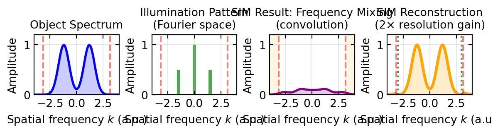

Code
# SIM frequency-domain illustration
fig, axes = plt.subplots(1, 4, figsize=get_size(15, 4), layout='constrained')
# Parameters
kmax = 4 # normalized frequency units
dk = 0.1
k = np.arange(-kmax, kmax, dk)
# 1. Object spectrum (simulated as narrow band)
O_k = np.exp(-((k - 1.2)**2 / 0.5)) + np.exp(-((k + 1.2)**2 / 0.5))
axes[0].plot(k, O_k, 'b-', linewidth=2, label='Object spectrum $\tilde{O}(k)$')
axes[0].axvline(-2*np.pi*0.5, color='r', linestyle='--', alpha=0.5, linewidth=1.5, label='OTF cutoff $\pm 2\pi \cdot \text{NA}/\lambda$')
axes[0].axvline(2*np.pi*0.5, color='r', linestyle='--', alpha=0.5, linewidth=1.5)
axes[0].fill_between(k, 0, O_k, alpha=0.2, color='b')
axes[0].set_xlabel('Spatial frequency $k$ (a.u.)')
axes[0].set_ylabel('Amplitude')
axes[0].set_title('Object Spectrum', fontsize=10)
axes[0].set_xlim(-kmax, kmax)
axes[0].set_ylim(0, 1.2)
axes[0].grid(True, alpha=0.3)
# 2. Illumination pattern in Fourier space (delta functions)
k_ill = 1.5 # illumination wavevector
I_illum_k = np.zeros_like(k)
I_illum_k[np.argmin(np.abs(k - 0))] = 1.0
I_illum_k[np.argmin(np.abs(k - k_ill))] = 0.5
I_illum_k[np.argmin(np.abs(k + k_ill))] = 0.5
axes[1].bar(k[::5], I_illum_k[::5], width=0.3, color='g', alpha=0.7, label='Illum. pattern: $\delta(k) + \delta(k \mp k_{ill})$')
axes[1].axvline(-2*np.pi*0.5, color='r', linestyle='--', alpha=0.5, linewidth=1.5, label='OTF cutoff')
axes[1].axvline(2*np.pi*0.5, color='r', linestyle='--', alpha=0.5, linewidth=1.5)
axes[1].set_xlabel('Spatial frequency $k$ (a.u.)')
axes[1].set_ylabel('Amplitude')
axes[1].set_title('Illumination Pattern\n(Fourier space)', fontsize=10)
axes[1].set_xlim(-kmax, kmax)
axes[1].set_ylim(0, 1.2)
axes[1].grid(True, alpha=0.3)
# 3. Convolution in frequency space (mixing)
I_mixed = np.convolve(O_k, I_illum_k, mode='same') * dk
axes[2].plot(k, I_mixed, 'purple', linewidth=2, label='Measured $\tilde{I}(k) = \tilde{O} \otimes \tilde{I}_{illum}$')
axes[2].axvline(-2*np.pi*0.5, color='r', linestyle='--', alpha=0.5, linewidth=1.5, label='Diffraction cutoff')
axes[2].axvline(2*np.pi*0.5, color='r', linestyle='--', alpha=0.5, linewidth=1.5)
# Shade regions brought into passband
axes[2].axvspan(-kmax, -2*np.pi*0.5, alpha=0.1, color='orange', label='High-freq info\nshifted into passband')
axes[2].axvspan(2*np.pi*0.5, kmax, alpha=0.1, color='orange')
axes[2].fill_between(k, 0, np.abs(I_mixed), alpha=0.2, color='purple')
axes[2].set_xlabel('Spatial frequency $k$ (a.u.)')
axes[2].set_ylabel('Amplitude')
axes[2].set_title('SIM Result: Frequency Mixing\n(convolution)', fontsize=10)
axes[2].set_xlim(-kmax, kmax)
axes[2].set_ylim(0, 1.2)
axes[2].grid(True, alpha=0.3)
# 4. Reconstructed spectrum (after SIM processing)
# In real SIM, we extract the shifted components and reconstruct extended spectrum
O_reconstructed = np.zeros_like(k)
# Copy central lobe
mask_central = np.abs(k) < 2*np.pi*0.5
O_reconstructed[mask_central] = O_k[mask_central]
# Add high-frequency copies shifted back
shift = k_ill
mask_high_pos = (k > 2*np.pi*0.5) & (k < 2*np.pi*0.5 + 2)
mask_high_neg = (k < -2*np.pi*0.5) & (k > -2*np.pi*0.5 - 2)
O_reconstructed[mask_high_pos] += np.maximum(0, I_mixed[mask_high_pos])
O_reconstructed[mask_high_neg] += np.maximum(0, I_mixed[mask_high_neg])
axes[3].plot(k, O_k, 'b--', alpha=0.5, linewidth=1.5, label='Original object')
axes[3].plot(k, O_reconstructed, 'orange', linewidth=2.5, label='SIM reconstruction\n(extended spectrum)')
axes[3].axvline(-2*np.pi*0.5, color='r', linestyle='--', alpha=0.5, linewidth=1.5, label='Original OTF')
axes[3].axvline(2*np.pi*0.5, color='r', linestyle='--', alpha=0.5, linewidth=1.5)
axes[3].axvline(-2*k_ill, color='darkgreen', linestyle=':', alpha=0.7, linewidth=1.5, label='SIM passband\n(~2× extension)')
axes[3].axvline(2*k_ill, color='darkgreen', linestyle=':', alpha=0.7, linewidth=1.5)
axes[3].fill_between(k, 0, O_reconstructed, alpha=0.2, color='orange')
axes[3].set_xlabel('Spatial frequency $k$ (a.u.)')
axes[3].set_ylabel('Amplitude')
axes[3].set_title('SIM Reconstruction\n(2× resolution gain)', fontsize=10)
axes[3].set_xlim(-kmax, kmax)
axes[3].set_ylim(0, 1.2)
axes[3].grid(True, alpha=0.3)
plt.show()